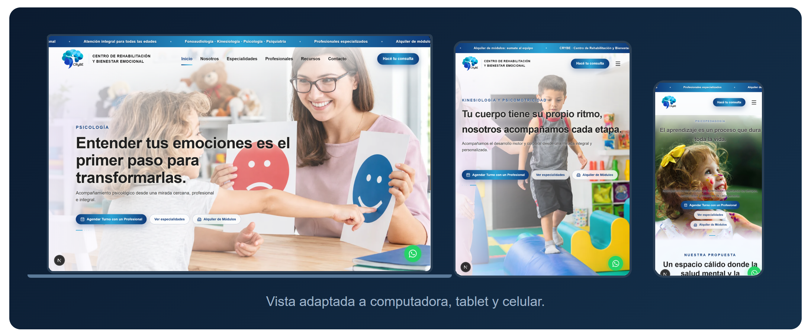

1. Presentación
El presente documento describe la propuesta de diseño y desarrollo del sitio web institucional para el Centro CRYBE, centro de salud ubicado en General Roca, Río Negro, dedicado a la atención en psicología, psiquiatría, fonoaudiología, psicopedagogía, kinesiología y psicomotricidad.
El objetivo es brindarle al centro un sitio web profesional, moderno y fácil de administrar, que refleje la seriedad y el trabajo de la marca, permita dar a conocer sus especialidades y equipo, facilite la consulta de potenciales pacientes y visibilice la oferta de alquiler de módulos para profesionales de la salud.
2. Objetivos del sitio
¿Para qué?
- Dar a conocer el centro, sus especialidades, su equipo y su trayectoria en un espacio propio y profesional.
- Ofrecer información clara y siempre actualizada: profesionales, días y horarios de atención, novedades y recursos.
- Recibir consultas de manera simple: formulario de contacto y WhatsApp.
- Promocionar el alquiler de consultorios (módulos) y la incorporación de nuevos profesionales al staff.
- Aparecer correctamente en Google cuando busquen el centro, sus especialidades o sus profesionales.
- Cargar rápido y verse bien en celulares, tablets y computadoras.
- Transmitir confianza a pacientes actuales y potenciales.
¿A quién va dirigido?
- Pacientes actuales y potenciales del centro.
- Profesionales de la salud interesados en alquiler de módulos o en sumarse al equipo.
- Cualquier persona que necesite conocer las especialidades, la ubicación o cómo contactar al centro.
3. Estructura del sitio
| Sección | Contenido |
|---|---|
| Inicio | Presentación del centro con carrusel destacado por especialidad (Psicología, Psiquiatría, Fonoaudiología, Psicopedagogía, Kinesiología y Psicomotricidad), accesos rápidos y llamados a la acción. |
| Nosotros | Descripción de quiénes somos, trayectoria y pilares del centro. |
| Especialidades | Tarjetas con las especialidades ofrecidas, cada una con su título, imagen y descripción. |
| Equipo | Fichas de los profesionales con foto, matrícula, formación, áreas de trabajo, modalidad de atención y días/horarios. Cada profesional cuenta con página propia con URL indexable. |
| Alquiler de módulos | Infraestructura y red para profesionales: consultorios equipados, habilitación sanitaria, beneficios del staff y consulta de disponibilidad. |
| Novedades y recursos | Publicaciones y recursos para la comunidad, administrables desde el panel. |
| Contacto | Formulario de consulta, información de la sede (dirección, horarios, teléfono), mapa interactivo, redes sociales y acceso directo a WhatsApp. |
| Panel de administración | Todo el contenido del sitio es administrable desde un panel privado: textos, imágenes, especialidades, equipo, novedades, datos de contacto y redes. |
* Las secciones pueden ajustarse según las necesidades reales del centro.
Vista previa
Ampliar vista previa del sitio →

4. Funcionalidades
Diseño responsivo
El sitio se adapta correctamente a celulares, tablets y computadoras, brindando una buena experiencia en cualquier dispositivo.

Panel de administración
El sitio contará con un área privada de administración, protegida mediante autenticación, desde la que se podrá gestionar el contenido sin necesidad de modificar código. Incluye:
- Inicio: imágenes, títulos y subtítulos del carrusel de portada.
- Nosotros: título, descripción e ítems de la sección.
- Especialidades: tarjetas con nombre, imagen y descripción.
- Equipo: profesionales: datos, fotos, formación, horarios y visibilidad en el sitio (alta, edición y baja).
- Novedades y recursos: publicaciones del blog (alta, edición y borrado).
- Bandeja de entrada: mensajes recibidos desde el formulario de contacto, con estado de leído/no leído.
- Datos y redes: teléfonos, email, redes sociales, dirección, horarios y contraseña de acceso.
Los cambios realizados en el panel se publican automáticamente en el sitio en pocos minutos, sin intervención técnica.
Formulario de contacto
Los visitantes podrán enviar consultas directamente desde el sitio (consulta clínica, alquiler de módulos, incorporación al equipo o turnos). Los mensajes quedan registrados en la bandeja de entrada del panel de administración, con validación en servidor y protección anti-robot. El formulario incluirá un aviso visible pidiendo no enviar información clínica detallada.
Botón de WhatsApp
Acceso directo al número de WhatsApp del centro con mensaje predefinido, facilitando el contacto inmediato desde cualquier dispositivo.
Fichas de profesionales
Cada profesional del equipo cuenta con una página propia (URL individual) con su formación, áreas de trabajo, modalidad de atención y contacto, facilitando su difusión y posicionamiento en buscadores.
Optimización de velocidad
El sitio está desarrollado para cargar rápido, con imágenes optimizadas y contenido servido desde infraestructura global.
Posicionamiento en buscadores (SEO inicial)
La base para que Google lo encuentre y lo muestre bien: títulos y descripciones de cada página, URL propia por profesional, sitio rápido y adaptable a celular, y alta en buscadores. Se hace una vez, al publicar.
Estadísticas de visitas
El sitio se entrega con la medición de visitas configurada y lista para usar: cantidad de visitantes, páginas más consultadas y dispositivos utilizados. Sin costo adicional.
5. Diseño
- Estética acorde a la identidad del centro y a su rubro: seria, limpia, cálida y confiable.
- Uso de colores institucionales, tipografía legible y un orden visual claro.
- Animaciones sutiles que acompañan la navegación sin afectar la performance.
- Las imágenes y el logo podrán ser aportados por el centro o coordinados en conjunto.
- Se incluyen hasta 2 rondas de ajustes de diseño; las rondas adicionales se cotizan por separado.
6. Documentación técnica de respaldo
- Manual del administrador: guía paso a paso para que el centro edite su contenido (títulos, imágenes, profesionales, publicaciones, datos de contacto).
- Registro de la configuración técnica del sitio y sus servicios.
7. Privacidad y tratamiento de datos
El sitio incorporará los avisos y mecanismos necesarios para informar al usuario cuando se recopilen datos mediante los formularios de contacto. Dado que el sitio incluye medición de visitas, también se informará sobre el uso de cookies de medición. Se incluirá una Política de Privacidad y los avisos correspondientes tomando como referencia la normativa aplicable. La validación jurídica definitiva de dichos textos corresponde al cliente.
8. Propiedad y titularidad
El dominio y las cuentas utilizadas específicamente para el funcionamiento del sitio serán registrados a nombre del Centro CRYBE, siempre que el proveedor correspondiente lo permita. El centro conservará el control y acceso a los servicios asociados al proyecto y el desarrollador contará con los permisos necesarios para configurar y administrar dichos servicios.
Una vez abonado el importe total del desarrollo, el cliente tendrá acceso al código fuente desarrollado específicamente para el proyecto y al repositorio correspondiente. El centro podrá continuar trabajando con el desarrollador, administrar sus servicios de manera independiente o contratar a otro profesional en el futuro.
9. Alcance — Qué NO incluye / costos adicionales
Para evitar malentendidos, se aclara que los siguientes puntos no están incluidos en esta propuesta y, en caso de requerirse, podrán cotizarse por separado:
- Contenidos, secciones o funcionalidades no previstos en este documento.
- Diseños adicionales o rediseños mayores posteriores a la aprobación del diseño.
- Integraciones con sistemas externos (agenda online, telemedicina, facturación, gestión interna, etc.).
- Modificaciones solicitadas posteriores al período de garantía de 60 días.
- Licencias o servicios de terceros no contemplados inicialmente.
- Servicios de marketing digital, gestión de campañas publicitarias o posicionamiento SEO avanzado y seguimiento continuo.
10. Garantía y soporte post-entrega
Se incluye soporte técnico gratuito durante los primeros 60 días posteriores a la publicación del sitio. Durante ese período se corregirán sin costo los errores atribuibles al desarrollo y se resolverán dudas relacionadas con el uso del panel de administración. Las nuevas funcionalidades, modificaciones de diseño solicitadas posteriormente o cambios de alcance no se consideran errores y podrán cotizarse por separado.
11. Entregables del proyecto
Al finalizar el proyecto se entrega:
- Sitio web publicado y operativo.
- Panel de administración.
- Base de datos configurada (donde se guarda el contenido del sitio).
- Dominio configurado (la dirección del sitio en internet).
- Certificado SSL/HTTPS (la conexión segura del sitio).
- Formularios y canales de contacto configurados.
- Código fuente del proyecto y repositorio.
- Credenciales/cuentas correspondientes al cliente.
- Manual de administración.
- Documentación técnica básica.
- Configuración inicial de herramientas de estadísticas y presencia en buscadores.
- Capacitación inicial para el uso del panel de administración.
12. Servicios hosting y dominio
El hosting es el espacio donde vive el sitio y lo mantiene disponible en internet las 24 horas. Existen varias opciones en el mercado, pero se recomienda contratarlo en Hostinger, plan Unlimited. Según el plazo contratado, el precio varía:
| Plazo | Costo mensual | Total |
|---|---|---|
| 12 meses | ARS 7.499 / mes | ARS 89.988 |
| 24 meses | ARS 6.499 / mes | ARS 155.976 |
| 48 meses | ARS 5.399 / mes | ARS 259.152 |
Al renovar, el precio del hosting aumenta de forma considerable: a la fecha de esta propuesta, la renovación es de ARS 21.999 por mes (ARS 263.988 por año). Es por eso que elegir el plazo de 48 meses sigue siendo la mejor opción: se abonan cuatro años completos por ARS 259.152, un monto incluso menor al de un solo año de renovación.
Con la contratación del hosting, el dominio (la dirección del sitio, por ejemplo centrocrybe.com) viene incluido gratis por un año, junto con otros servicios como el certificado de seguridad (SSL). El dominio es siempre anual y su renovación tiene un costo aproximado de entre USD 8 y USD 15 al año. Tanto el dominio como el hosting quedarán registrados a nombre del centro.
Durante el desarrollo, el sitio se publica en un entorno de prueba para que el centro pueda revisarlo y aprobarlo antes del lanzamiento. Este entorno no tiene costo y es temporal: se retira al publicar el sitio definitivo.
13. Honorarios profesionales
Los honorarios corresponden al trabajo profesional de diseño, desarrollo, configuración y puesta en funcionamiento del proyecto. El dominio y el hosting serán registrados a nombre del cliente y abonados directamente por el centro al proveedor correspondiente.
El desarrollo del sitio web incluye:
- Diseño y maquetación del sitio adaptable a computadoras, tablets y celulares.
- Desarrollo de las funcionalidades previstas en la propuesta.
- Panel de administración con todas sus secciones.
- Integración del formulario de contacto, bandeja de entrada y WhatsApp.
- Fichas públicas de profesionales con URL propia.
- Configuración de la base de datos del sitio.
- Configuración del dominio y certificado SSL/HTTPS.
- Protección anti-spam del formulario.
- Pruebas, correcciones y publicación.
- Documentación y capacitación inicial para el uso del panel.
14. Condiciones de pago y vigencia
- Honorarios de desarrollo: 30% de anticipo al inicio y el 70% restante antes de la publicación definitiva.
- Formas de pago: transferencia bancaria / otros a acordar.
- Dominio y hosting: abonados directamente por el Centro CRYBE al proveedor correspondiente.
- Vigencia: los montos y condiciones de esta propuesta tienen una validez de 30 días desde su fecha de emisión (hasta el 29/10/2026).
- Precios de terceros: son de referencia y pueden ser modificados por cada proveedor.
15. Próximo paso
En caso de aceptar la propuesta, se firmará un contrato que incluirá los puntos desarrollados en este documento. Luego de la confirmación del alcance y del pago inicial correspondiente, se coordinará el inicio del proyecto. Quedo a disposición para resolver cualquier consulta.
El sitio se encuentra armado y puede entregarse en las próximas 48 horas para el modo prueba, para que pueda ser revisado y aprobado antes del lanzamiento.
lean.calfin@gmail.com · +54 351 2259123 · Río Gallegos, Santa Cruz
Propuesta de Sitio Web Institucional · Centro CRYBE · 2026